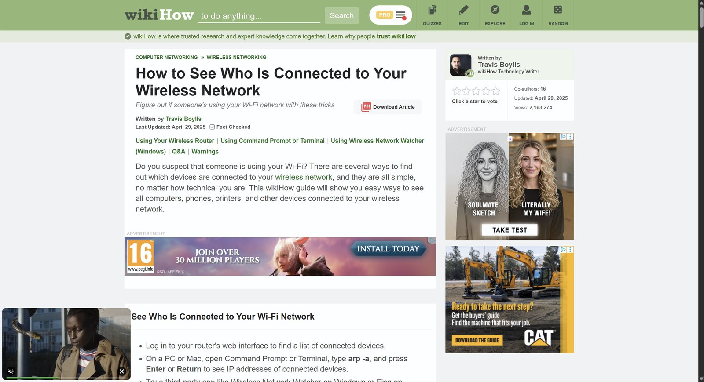
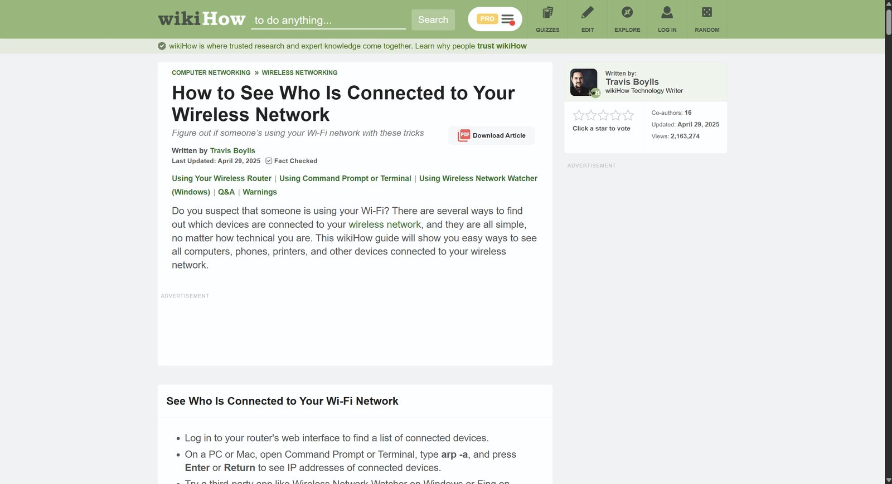
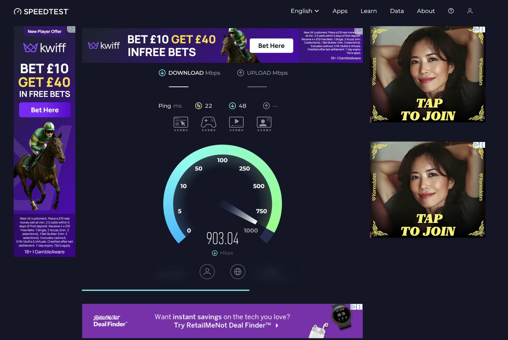
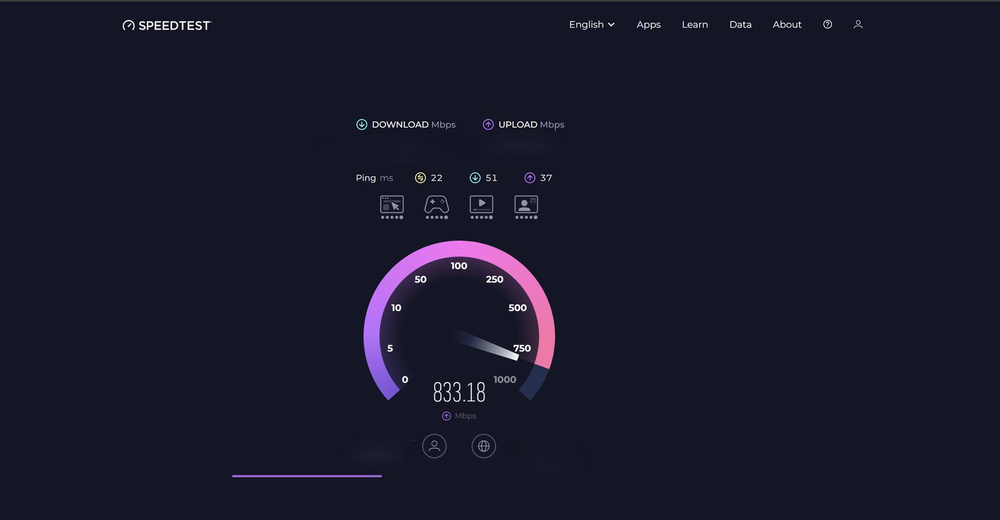
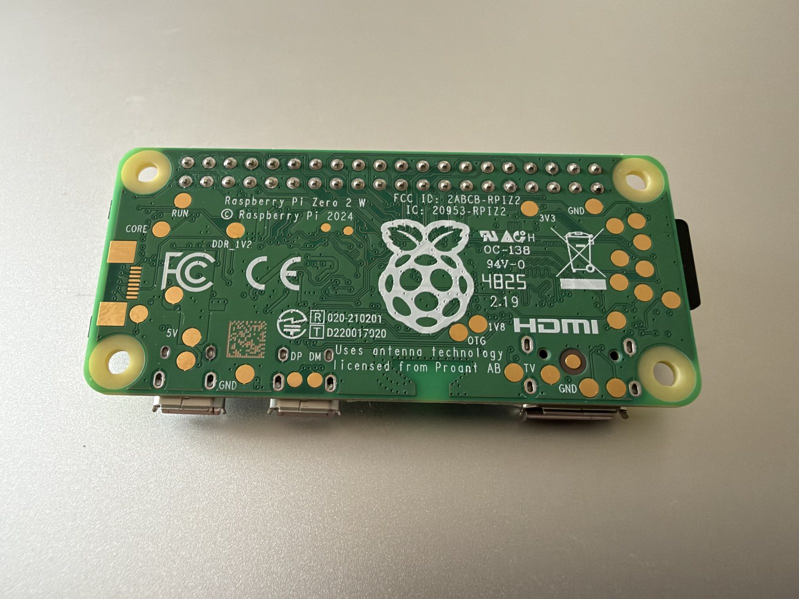
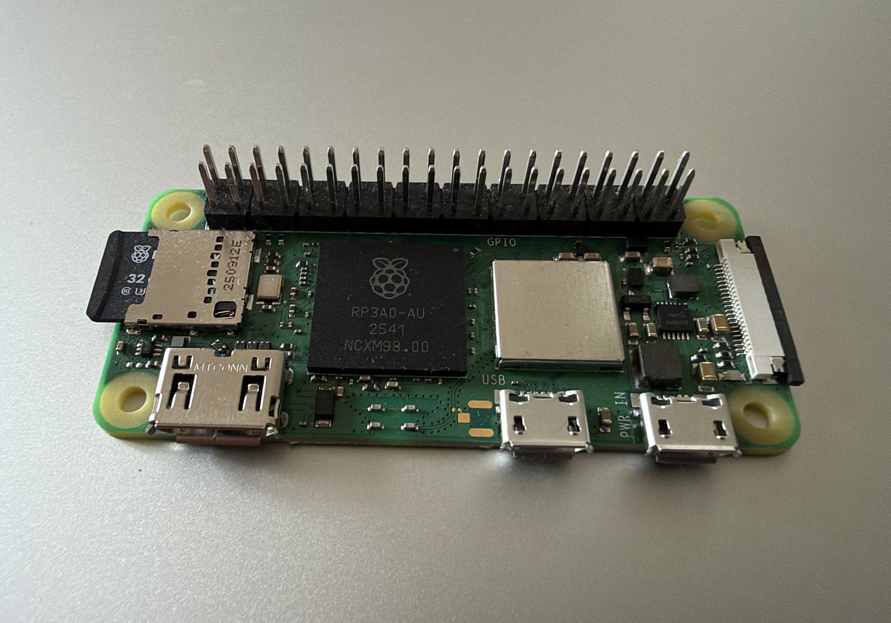

Last year I set up a Pi-hole and since then my life has significantly improved. Bricking the internet in my home and scrambling to fix my home network at 08:59 before starting work. No pain no gain.
What the hell is a Pi-hole?
Pi-hole is a specific use for a Raspberry Pi computer where it blocks ads across your network in short, the way it does this is by creating a DNS sinkhole where you configure your router to direct traffic to your raspberry pi which has software that moves any 'bad' DNS rerouting it to nowhere, so it never renders. It could block some legitimate things so you might have to analyse those on a case by case basis, and may turn your Pi-hole off if you need a specific tool but so far I have been all good.
Like many, I generally don't like what the internet has become. It used to be a physical place, the desktop computer and it used to be to share information. Now there is so much crap, so many ads served, apps are ridden with low quality adverts which are both annoying, could affect your bandwidth, cause trackers which can weigh down your browser and are even potentially dangerous. Scams, adware, potentially unwanted programs which are not obviously malicious etc etc.
I am now completely intolerant to ads, I look at them in disgust. When I am on the internet outside of my home network I am shocked by not only the amount of ads, but the quality. Slop slop slop. Pi-hole will cause your life to improve I promise.
So, a bit of a walkthrough
but you can follow this guide yourself on the raspberrypi website. https://www.raspberrypi.com/tutorials/running-pi-hole-on-a-raspberry-pi/
Key phrases simplified:
- Domain Name - unique alphanumeric address of a web resource (e.g. hamiltonhacks.com)
- IP address - unique numeric address of a web resource (e.g. 123.45.67.8910)
- DNS - Domain Name System, associates domain names with IP addresses
- DNS server - a server that translates domain names into IP addresses
Steps
You put in a website into your web browser, a DNS server is queried to find that domain and responds with the IP for that domain, then the IP is queried which serves the content for the website you're looking for.
Domain names are the friendly version of IP addresses, it's a lot easier to remember HamiltonHacks.com than an IP address, for example 1.1.1.1.
Pi-hole is the middle man between your device on your network and the resource from the big bad internet (querying the DNS server).
Pi-hole will query this resource but before it does that it will check a blocklist (as part of the software)
if the domain is all good then you get the internet resource (weird way of saying website) no problems and you don't even know Pi-hole is there. if the internet resource is known bad, ie doesn't pass the blocklist then the Pi-hole serves a non routable address such as 0.0.0.0
So, websites with ads, will appear fine and the content will be there but there will be a big beautiful empty space where the ad should have been. Love it.


I used a Raspberry Pi Zero 2 W for this, as recommended by the guide and installed Raspberry Pi OS Lite (32-bit).
the long and short of it is
- you set up your pi with the imager + wizard, giving it a name
- you connect to your pi via SSH (most commonly PuTTY on windows) using this name.
- then very simply you install a script onto this pi which runs Pi-hole. it then takes you to a pretty straightforward set-up script.
DANGER DANGER DANGER
After this you need to configure your own network connections which is where it gets a bit tricky and dangerous. Not dangerous but more high risk. If you do this wrong you could stop your wifi working at all (as I did on my first pass very shortly before work). As per the rest of the setup it's in the raspberry pi guide so I won't regurgitate that necessarily. Link: https://www.raspberrypi.com/tutorials/running-pi-hole-on-a-raspberry-pi/
Interestingly, you actually have three options to implement this project.
- configure Pi-hole as the DNS server for your network
- configure Pi-hole as the DHCP provider for your network
- manually point devices at Pi-hole for DNS
That's pretty neat. I used Pi-hole as a DNS server for the whole network so it works for any device connected to my wifi. It was pretty tedious I am not gonna lie but well worth it in the long run. The good thing is you are not the first to do this and there are many guides out there and this is discussed on many forums out there too.
Hallelujah it works! See these beautiful screenshots below showing Pi-hole at work. bye bye kwiff betting and KoreaDates *chef's kiss*


Screenshot showing before and after
If you do build this then here is a link to a site full of ads to test if it worked below. There are actually many sites that you can use to test this and you may have one in mind already. A popular one is speed test (the one in the screenshots above).
'Without Pi-hole, many browsers score near 0; with Pi-hole, you should see a score at or near 100.'https://adblock-tester.com/
That was a lot of fun. More Pis more building. Networking isn't security but security is networking.


References:
https://www.raspberrypi.com/tutorials/running-pi-hole-on-a-raspberry-pi/
Written by a human